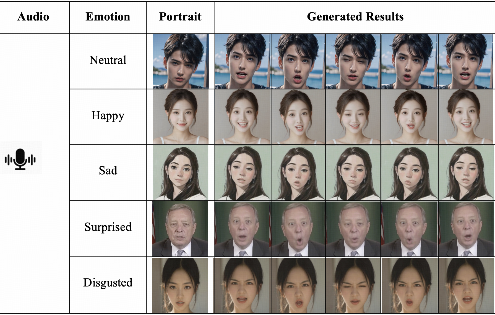
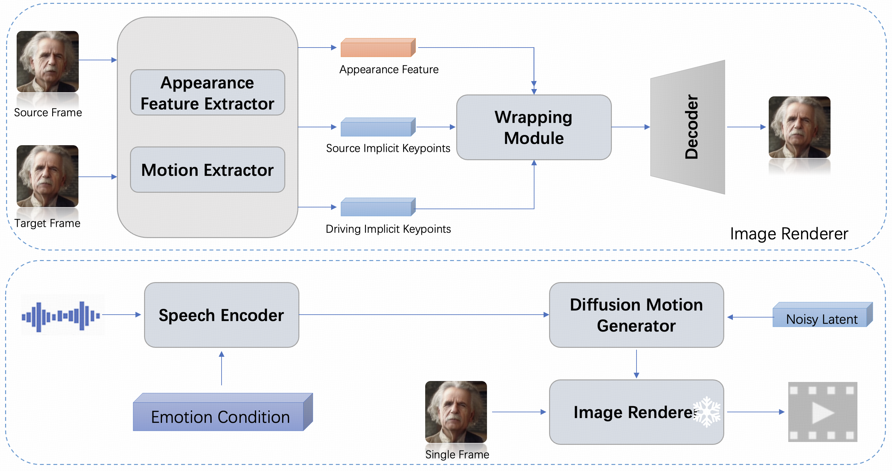

Takin-ADA: Emotion Controllable Real-Time Audio-Driven Animation with Canonical and Landmark Loss Optimization
Takin-ADA: Emotion Controllable Real-Time Audio-Driven Animation with Canonical and Landmark Loss Optimization
[Paper]
[Official Website]
Everest Team
Ximalaya Inc.
Abstract: We present Takin-ADA, which enables real-time audio-driven animation of individual portraits utilizing 3D implicit keypoints, while also allowing for precise control over facial expressions for the first time. Takin-ADA tackles critical issues faced by existing audio-driven facial animation methods, notably expression leakage, subtle expression transfer and audio-driven precision through a two-stage approach. In the first stage, we ingeniously incorporate a canonical loss and a landmark-guided loss to enhance the transfer of subtle expressions while simultaneously mitigating expression leakage. These advancements significantly elevate the quality and realism of the generated facial animations. The second stage employs a diffusion model framework leveraging HuBERT features, which substantially improves lip-sync accuracy, ensuring a more natural and synchronized audio-visual experience. Through this two-stage approach, Takin-ADA not only generates precise lip movements but also allows flexible control over expression and head motion parameters, resulting in more natural and expressive facial animations. Takin-ADA is capable of generating high-resolution facial animations in real-time, outperforming existing commercial solutions. Extensive experiments demonstrate that our model significantly surpasses previous methods in various aspects, including video quality, facial dynamics realism, and naturalness of head movements.

We introduce Takin-ADA, a framework that transforms input audio and a single static portrait into animated talking videos with naturally flowing movements. Each column of generated results utilizes identical control signals with different and expressions but incorporates some random variations, demonstrating the diversity of our generated outcom
Overview of Takin ADA

Takin-ADA comprises two primary components: (1) a representation learning module for extracting expressive and disentangled facial latent representations, and (2) a sequence generation module that synthesizes motion sequences based on audio input. The first component focuses on learning robust motion representations through the utilization of canonical keypoint loss and landmark guidance. Subsequently, these learned motion representations serve as input for the second component, enabling further audio-drive facial image generation and manipulati
Audio driven examples
| Audio Driven (English) | ||||
|---|---|---|---|---|
|
|
||||
| Audio Driven (Chinese) | ||||
|
|
||||
| Audio Driven (Sing) | ||||
|
|
||||
| Audio Driven Demonstration (Audio produced by Takin-TTS) | ||||
|
|
||||
Emotion Controllability Demo
|
|
||||
| happy | surprised | sad | anger | disgusted |
|---|
Method Comparsion (Video driven)
|
|